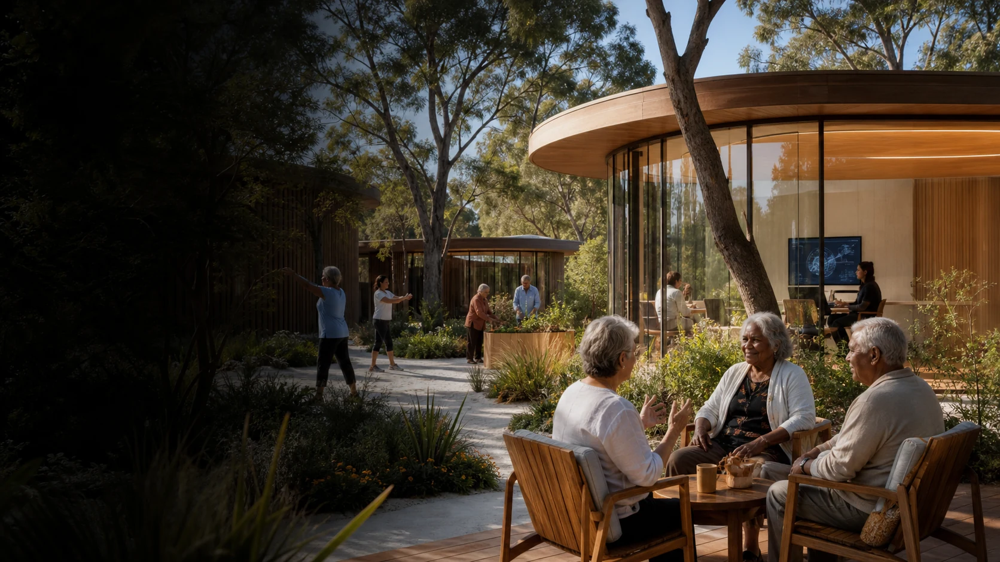

Everyday aged care and Elders
Food, sleep, movement, social connection, culture, autonomy, comfort, family and carer wellbeing remain central measures of whether life is improving.

The working field joins everyday quality of life, cultural and community life, ageing in place, specialist facilities, longevity services and carefully governed anti-ageing research.
The opportunity spans ordinary care and ambitious research without treating them as the same activity or promising a medical result.
Food, sleep, movement, social connection, culture, autonomy, comfort, family and carer wellbeing remain central measures of whether life is improving.
Mobility, strength, cognition, rehabilitation, environmental support and practical routines form a grounded field for service improvement and research.
Future private-pay and community access models are being explored for suitable assessment, training, equipment and specialist services at an appropriate site.
Any emerging intervention would require its own scientific, ethical and regulatory pathway. No claim of reversing ageing or treating disease is made here.
The present prototype explores longitudinal records linking health, lived experience and place. A separate Software as a Medical Device plan exists, but the clinical software and regulatory pathway are not fully developed.
The prototype brings together agreed observations about daily experience, routines, movement, cognition and place.
Repeated observations support comparison between ordinary variation and changes in routine, support or environment.
Comfort, air, light, sound, food, sleep, safety and support for independence form part of the picture.
Any future clinical use would require a defined purpose, evidence, consent, safety work, suitable governance and the relevant regulatory process.
The working material describes 60 two-hour sessions, a total of 120 hours. Hyperbaric therapy is the setting for the full sequence. Sensing, light, sound, scent, dialogue and other experimental elements sit inside those chamber sessions rather than forming separate treatment programs.
Establish a baseline and explore how the participant responds to carefully defined changes during chamber sessions.
Combine timing, chamber settings and other selected elements into structured sequences informed by the earlier observations.
Repeat, compare and review selected sequences while recording both the participant's experience and agreed measurements.
This is a planning concept, not a clinical protocol. Chamber design, oxygen pressure, participant eligibility, staffing, measurement, consent, safety, ethics and regulation all require expert development before any human study.
One possible distributed model would keep ordinary daily life close to home while placing specialist equipment, staff and research support where they are genuinely useful.
Ageing in place, accessible design, environmental sensing and support for independence.
Quality of life, reablement, cognition, mobility, culture and intergenerational activity.
Assessment, equipment, practitioner learning, carefully governed services and research in a future suitable location.
Useful methods and systems move beyond one site only through the decisions and responsibilities of participating organisations.
Aged care and Elders, including culture, quality of life, cognition, mobility, social connection and reablement.
Independent living, home adaptation, environmental support and ageing in place.
Primary health, Indigenous health, prevention, ageing and dementia.
Culture, education, Elders, community life and intergenerational activity.
A possible setting for longevity, learning, research and specialist facilities.
Possible research translation across aged care, home care, dementia and workforce development.
A longer-horizon site idea for residential services, specialist practitioners, private-pay longevity and rejuvenation research.